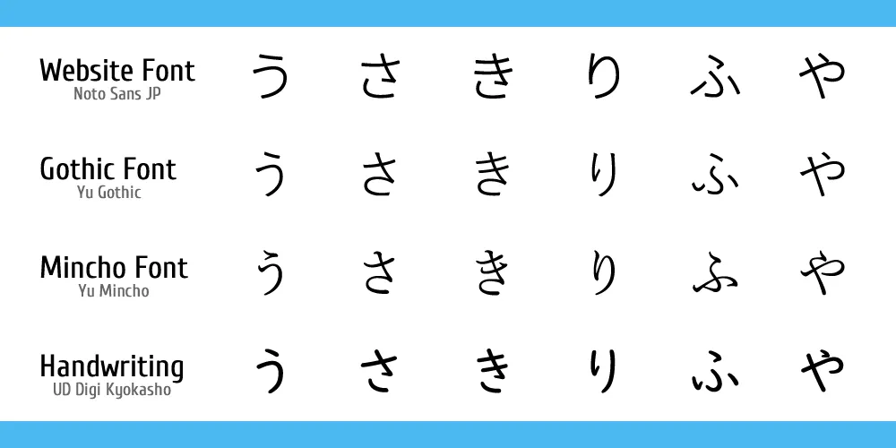
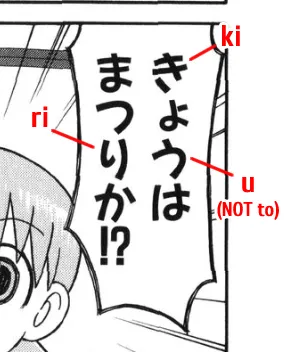
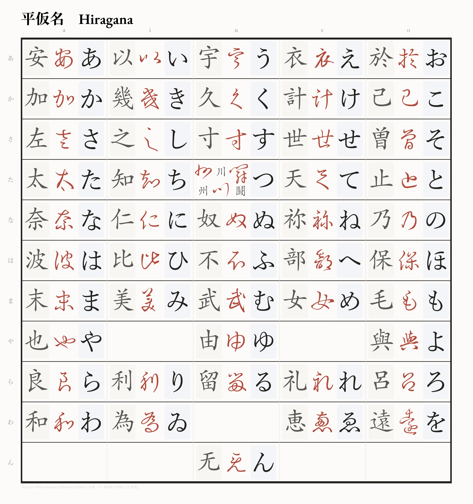

Before we close this chapter on Hiragana, there's just a few more things to cover about the Japanese writing system that you should know about for reading, writing, and even speaking.
Double Consonants and the Small っ
When studying Japanese, you may see some words that contain a small つ, such as がっこう (school), きっさてん (cafe), きっぷ (ticket), and more. This character is NOT pronounced as "tsu." If you looked at the furigana for these words, you may have noticed that the romaji for the beginning of the hiragana that comes after the small つ is doubled. This is called a "double consonant."
This means that the small つ isn't pronounced as "tsu" but instead creates a brief pause before a consonant that doubles the pronunciation of it. The pronunciation is similar to double consonants in English, such as rabbit, ladder, happy, and so on. Notice how you pronounce it? Like "rab" and then "bit." The same goes for Japanese: "gak" and then "kou" for がっこう and similar words.
To type double consonants on a keyboard, all you need to do is double the beginning of the hiragana that comes after the small っ. Just by typing "gakkou" you end up writing がっこう. If you're using kana input, tap つ and then the small key 小 to convert it to a small っ. You can also write xtsu/xtu for romaji input to write a small tsu manually, such as in cases where you want to write something like あっ (ah). Let's give typing some words with double consonants a try below!
| Write the word on the left in Hiragana in the input on the right. If the input turns green, you wrote the word successfully. | |
|
きっさてん (cafe) |
|
|
ざっし (magazine) |
|
|
きっぷ (ticket) |
|
|
がっこう (school) |
|
|
にっぽん (Japan) |
|
|
あっ (ah) |
|
Hopefully you got the hang of it now! Aside from the small つ, there is one other double consonant and that is with "nn." This isn't represented with つ, but with ん + a kana from the な column, such as さんねん (three years), みんな (everyone), and so on. These ones are pretty simple compared to the small つ and you won't even realize that you're reading/writing a double consonant.
Long Vowels
A long vowel is a vowel that has its sound extended by twice its usual duration. This occurs when two of the same vowels are written one after the other, such as in すうじ (number) or とお (ten). If you drop these extended vowels or don't pronounce them long enough, they may turn into different words, for example: すじ (muscle) and と (door). So always make sure to pronounce the vowel twice as long when a long vowel occurs to prevent saying different words!
Here are some more examples of the different long vowels that you can create with Hiragana.
| Vowel | Long | Short |
| a | おばあさん (grandmother) | おばさん (aunt) |
| i | おじいさん (grandfather) | おじさん (uncle) |
| u | くうき (air) | くき (stem) |
One exception is え which has two different ways to create an "ee" sounding long vowel; えい which is the most common and ええ which is not as common.
| Vowel | Long | Short |
| e | えいご (English) | えご (guard) |
| e | おねえさん (older sister) | おねさん (Ms. Ridge) |
The last exception is お which is more commonly extended by using う, but there are some words that use お. These still create an "oo" sound despite their differences.
| Vowel | Long | Short |
| o | おとうさん (father) | おとさん (Mr. Sound) |
| o | おおい (many) | おい (hey!) |
That's it for the long vowels! They might seem a little confusing at first, but just remember that if you see a single vowel (あ、い、う、え、お) after another kana that ends in that vowel (or o+う and e+い), it's most likely extending the sound that came before it.
Vowel Devoicing
The i and u vowels are usually dropped between voiceless consonants (such as k, s, t, h, and p) or at the end of a sentence. This phenomenon is often referred to as "Vowel Devoicing."
To give some examples, you might expect すき (like) to be pronounced like "sue-key," but in natural Japanese, the u is devoiced, making it sound more like "ski." The same goes for the copula です, which is pronounced more like "des" (like saying "death" with an "s" instead of a "th") instead of "de-sue."
I'll list some more of these examples below using common words. The vowels that are devoiced are marked in red.
| Word | Romaji | Pronunciation |
| すき (like) | suki | ski |
| です (be, is) | desu | des |
| ます (polite verb ending) | masu | mas |
| あした (tomorrow) | ashita | ashta |
| した (did, past of する; to do) | shita | shta |
Honestly, the best way to learn if a vowel is devoiced or not is by listening to how native speakers say the word and attempt to mimic how they pronounce it. This is why we'll try to provide audio pronunciations for all of our vocabulary when possible.
Pitch Accent
One integral part of Japanese that can be hard to master is pitch accent, where syllables of a word are pronounced in either a high or low pitch depending on the word and even the local dialect. Just like with long vowels, if you don't get the pitch accent right for some words, they can end up turning into another word. To show the pitch accent, we'll write high pitch in blue CAPS and low pitch in purple lowercase.
One of the most popular examples for demonstrating this is はく (to put on shoes/pants/etc.). This is normally pronounced haKU (low pitch into high pitch), however, if you reverse this and say HAku (high pitch into low pitch) you end up saying the word for "vomit." This is why it's very important to pay attention to pitch accent when learning words so you don't accidently say you're vomiting when putting on your shoes.
Here are a few more words that are spelt the same, but have different meanings depending on their pitch accent.
| Word | high-low | low-high |
| あめ | Ame (rain) | aME (candy) |
| はし | HAshi (chopsticks) | haSHI (bridge) |
| かみ | KAmi (god) | kaMI (paper/hair) |
| きる | KIru (to cut) | kiRU (to wear clothes) |
| はく | HAku (to vomit) | haKU (to put on shoes/pants/etc.) |
Looking at the table above, you might be thinking to yourself: "How do you tell these words apart while reading if they're spelt the same?" And there's a very good answer to that question: Kanji. Rain is spelt 雨 and candy is spelt 飴, chopsticks is spelt 箸 and bridge is spelt 橋, and so on... Each word has its own unique Kanji that convey different meanings to help differentiate it from the other. This is why it's important to study Kanji in addition to vocabulary, as Kanji can help you to easily tell homonyms apart.
Font Differences
Much like with English and other languages, there are many different ways to write Hiragana besides the ways that we've shown you on this website. These differences are also reflected in digital fonts, such as those used on our website, in books, and more.
The differences mostly occur with the following kana: う, さ, き, り, ふ, and や. The big four that you want to pay special attention to in the image below are う, さ, き, and り, because they're often either drawn connected or disconnected.

- う can be drawn in two strokes, a single stroke, or similar-looking to と.
- さ is sometimes drawn with the second stroke connected to the third stroke. (Gothic, Mincho)
- き is sometimes drawn with the third stroke connected with the fourth. (Gothic, Mincho)
- り can be drawn in a single stroke (Noto Sans, Mincho) or as two separate lines (Gothic, Handwriting).
- ふ is sometimes drawn with the first and second or third and fourth strokes connected, or both. (Mincho)
- や is sometimes drawn with the second stroke connected to the third. (Mincho)
As I mentioned earlier, う, さ, き, and り are the four that you want to pay special attention to, because they can sometimes look like completely different characters, う and り especially. One of the ones that trip up a lot of learners just starting to read is the う in よつばと！, a highly recommended manga for beginners. I've had many people ask me: "Is this a と?" and "What word is this supposed to be?"

If you look at the example above, you might think that it reads「きょとはまつりか！？」, but it in fact reads「きょうはまつりか！？」(Is there a festival today!?). You can tell that it is う, because it is open on the left whereas と is open on the right. The font in this lighthearted manga even tripped me up when I first started reading things in Japanese and really made me realize that there's many different ways that the kana can be written, even outside of the more common differences.
It might be hard to figure out what character is what at first, but as you're exposed to more fonts and handwriting, along with expanding your vocabulary, you'll more easily be able to figure out what a character is supposed to be when you come across something like the example from よつばと！
That's pretty much all you need to know for Hiragana at this point! Go take a break for the day and get yourself a sweet treat to eat for making it all the way through all of this, because we'll need to do it all again with Katakana soon.
For now, you can read the section below if you're interested in the origin of Hiragana or do some more of the Hiragana exercises in the lessons section that you haven't done yet. Once you feel you're ready, move onto the Katakana section to start learning about Katakana!
Where Did Hiragana Come From?
Now that you know all the Hiragana and about the Japanese writing system, let's take a break! While learning about Hiragana, have you ever wondered about where they came from or how they came to be?
Hiragana is thought to have originated from the cursive form of Kanji in Chinese calligraphy. The chart below (courtesy of wikipedia) shows what Kanji each Hiragana was derived from. It's read in this manner: Kanji > Cursive form (in red) > Hiragana (in black).

See https://en.wikipedia.org/wiki/Hiragana#History for a more in-depth explanation.
Hiragana also wasn't widely used originally and was mostly used by women at first which may be why it has a more cuter, feminine feel to some. For example, writing かわいい (cute) instead of its kanji variant (可愛い) is considered cuter/more friendly-feeling whereas the kanji variant feels more formal.
I recommend checking out the wikipedia article below the chart if you're curious about more of the history on Hiragana!